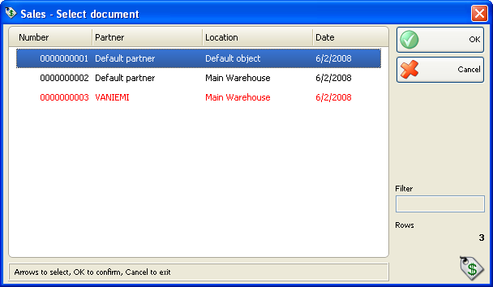
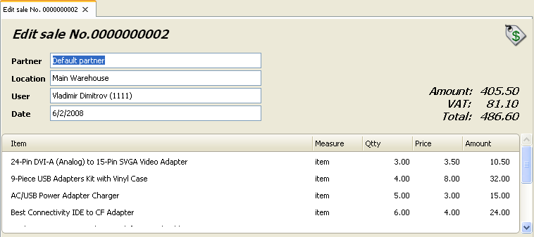

Editare si retiparire vanzari
In fereastra Vanzari � selectare document selectati documentul dorit pentru a fi editat sau tiparit dupa care butonul OK .

Folositi fereastra Editare vanzare pentru a edita sau sterge o vanzare existenta.

Campul Partner va permite sa editati numele clientului / companiei care a efectuat achizitiaarticolului. Puteti vizualiza lista vanzarilor apasand tasta F4.
Campul Localizare va permite editarea numelul localizarii de unde a fost prelua articolul. Puteti vizualiza lista localizarilor apasand tasta F4.
Campul Utilizator va permite editarea numelui utilizatorului care a efectuat vanzarea. Puteti vizualiza lista apasand tasta F4.
Campul Articol va permite editarea unei denumiri pentru un articol anumit. Puteti vizualiza lista apasand F4. Puteti adauga un articol inserand o linie nouw prin apasarea tastei ENTER.
Puteti introduce o valoare noua in campul Cant daca doriti sa modificati cantitatea curenta.
Pentru stergerea unei inregistrari, se va pune valoarea zero in campul Cant.
Dublu click pe data documentului va permite modificarea datei. Se va deschide fereastra Calendar� care va permite selectarea unei alte date (prin dublu click pe data dorita sau prin apasarea tastei OK dupa selectarea datei dorite). Dup ace inchideti fereastra Calendar data selectata va aparea in fereastra Editare Vanzare.
Apasati tasta F9� pentru salvare document.
Nota: Nu puteti sterge un document daca exista o factura deja emisa.
Se poate folosi fereastra Vanzare � selectare document pentru retiparirea unei vanzari effectuate deja.
Dupa selectarea unui document care va fi retiparit, trenuie doar sa confirmati alegerea. Puteti sa vizualizati sau sa tipariti documentul selectat, in functie de print settings.

�2006-2012 Microinvest, All rights reserved